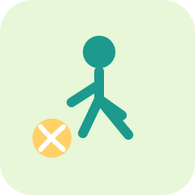

Language and Literacy
Communication, expression, comprehension, and language-rich learning experiences.
Open pageHome
The KLPT site is designed to help first-time users understand the tool, the learning domains, and the supporting resources, while still letting repeat users navigate straight to the observation support content they need.
Communication, expression, comprehension, and language-rich learning experiences.
Open pagePlanning, focus, organisation, and the routines that support self-regulation.
Open pageRelationships, self-awareness, emotions, and the interpersonal side of learning.
Open page
Movement, coordination, physical confidence, and the embodied aspects of learning.
Open pagePatterns, number sense, problem solving, and early mathematical understanding.
Open pageFind Out More
Explain the developmental thinking and structure that sits behind the KLPT.
Open development pageShow how progress can be understood over time and how the platform supports that view.
Open progressions pageAnswer common questions from educators, families, and first-time users.
Open FAQsProvide a clear way for visitors to reach out when they need support or clarification.
Open contact page